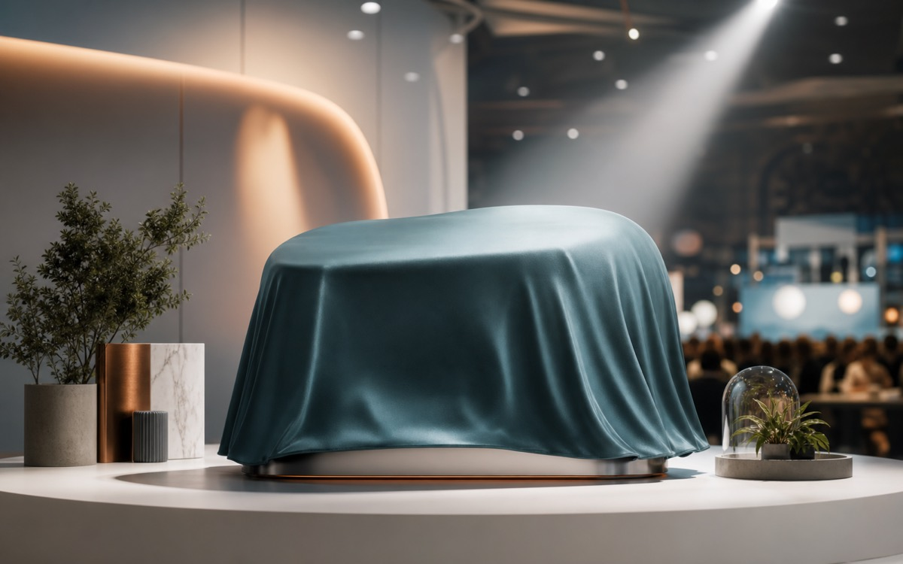

Capture in seconds
Save a voice note, image, or quick update while the details are still fresh.
Private beta - Autumn 2026
Kestrel turns voice memos, photos, and rough observations into organized updates for teams working away from a desk.

Save a voice note, image, or quick update while the details are still fresh.
Kestrel groups observations by project, location, and the people who need them.
Turn a day of scattered notes into a concise summary with visible next actions.
The first release supports mobile capture, automatic summaries, and shareable project updates for small field teams.